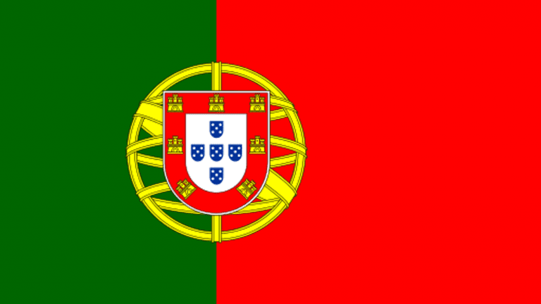
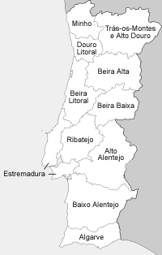
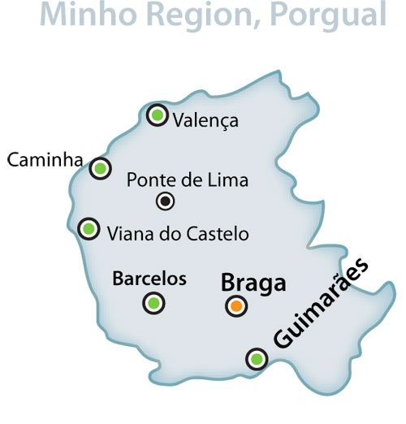

Portugal -   My homeland is Portugal. To be more specific I come from the province of Minho which is the most north-eastern Portuguese province.
|
|
Portugal's history goes back to the year 1143, when it was founded making it one of the oldest european countries! |